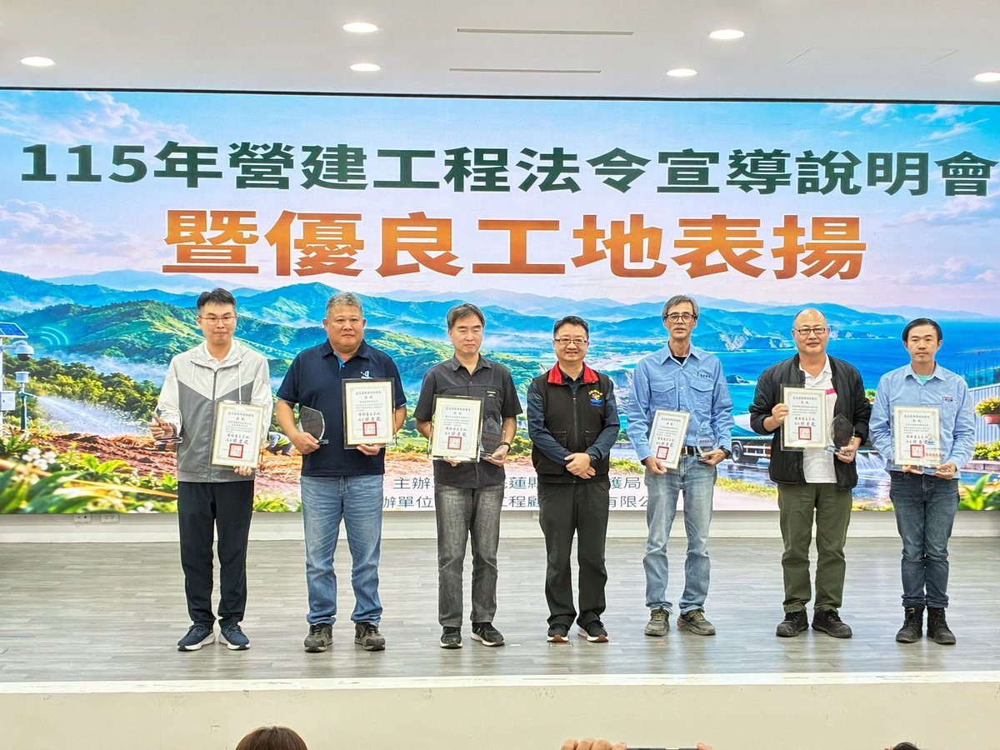

花蓮表揚優良工地 公私協力落實汙染防制

可樂電子報小編/編輯
為提升營建工程汙染防制與環境管理品質，花蓮縣環境保護局日前於環保局一樓多媒體會議室辦理「115年營建工程法令宣導說明會暨優良工地表揚」，共38個單位、近60人參與，其中公部門計23個單位，透過表揚與實務交流，帶動工程團隊落實自主管理，維護居民生活品質，展現縣府與業界攜手守護環境的決心。

縣長徐榛蔚表示，縣府配合2050淨零排放目標，持續推動施工機具排放管理，推廣低汙染與電動化機具，並鼓勵運用稻草覆蓋裸露地，兼顧揚塵防制與資源循環；未來將結合永續城市、責任消費與生產及氣候行動等永續發展目標，透過跨機關合作與科技應用，把減汙減碳理念融入公共建設。

本年度優良工地第一名由臺灣港務股份有限公司花蓮港務分公司與健達營造有限公司獲得；第二名為國家住宅及都市更新中心與良有營造股份有限公司；第三名為交通部鐵道局東部工程分局與工信工程股份有限公司，肯定業主與施工團隊共同落實環境管理的努力，期盼得獎團隊持續精進，成為其他工地學習的標竿。
另頒發三項特色獎，鼎耀興建設有限公司獲「綠籬美化亮點獎」、空軍防空暨飛彈指揮部獲「稻草防塵創新獎」，交通部公路局東區養護工程分局花蓮工務段獲「洗街減塵助攻獎」，展現工區綠美化、資源再利用及道路洗掃等多元作法，提供其他工地參考，也讓公私協力的成果被更多工地看見。
會中邀請許文昌教授針對工地常見缺失、汙染防制重點與科技化管理實務分享經驗，協助業主、監造及承包商掌握管理要求，提升自主管理能力。環保局也呼籲各工程團隊將防制措施納入施工規劃，定期檢查設施功能，依施工情形及天候調整灑水、覆蓋與道路清潔作業，發現缺失即時改善，降低對周邊環境的影響，讓工地管理與居民生活品質同步提升。

環保局強調，營建工程環境管理沒有捷徑，將持續透過法令宣導、現場輔導及科技管理三管齊下，推廣優良工地經驗、深化公私協力，把減汙減碳理念落實到每一處工地，與業界共同守護花蓮乾淨、宜居的生活環境，讓鄉親實際感受到空氣與道路品質的改善，也期盼業主與施工團隊把環境管理視為工程品質的重要一環。
📸 更多現場紀實影像


🌟 掌握花蓮在地第一手資訊・歡迎訂閱追蹤
深度紀實報導、在地精采影音專題，第一時間接收最新消息！